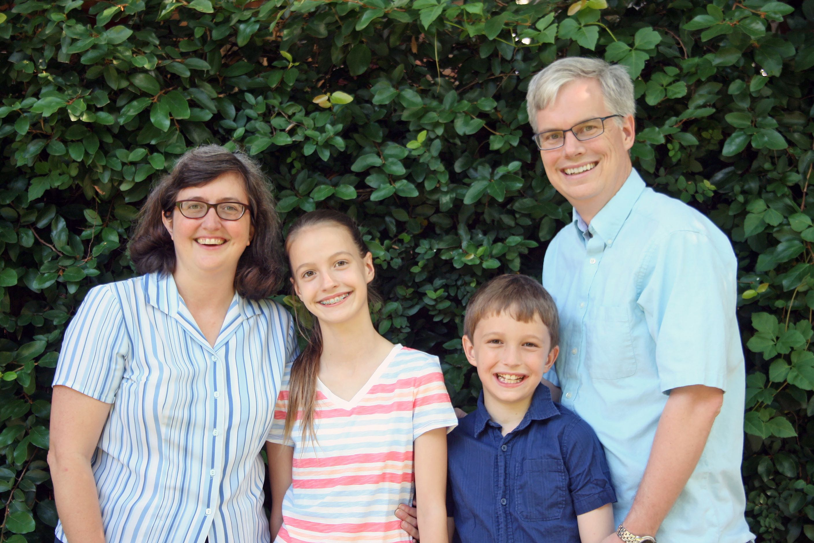

<div class="panel">
    <div class="panel-body">
        <div id="cabdesc" class="well">
            <h2>Wiess A-Team</h2>
            <p>
            </p>
        </div>
        <div class="well" id="master">
            <div class="row">
                <div class="col-md-4">
                    <hr>
                    <h2>Drs. Andrew and Laura Schaefer</h2>
                    <hr>
                    
                    <hr>
                    <h4><b>Laura Schaefer</b></h4>
                    <h4>Professor and Department Chair - Mechanical Engineering</h4>
                    <hr>
                    <h4><b>Andrew Schaefer</b></h4>
                    <h4>Professor and Chair - CAAM</h4>
                    <hr>
                    <h4>Email: wiessmasters@rice.edu</h4>
                    <h4>Phone #: 713-348-6025</h4>
                    <hr>
                </div>
                <div class="col-md-8" style="margin-top: 23px; font-size: 14px;">
                  <p>Welcome to Team Family Wiess from the Schaefer Family! Although this is the Schaefers’ first year as Masters of Wiess, they have a long history with the college. Andrew is Wiess ‘94 (CAAM and Math Econ) and Laura is Wiess ‘95 (MECH and English), and they met as undergrads at (Old) Wiess in 1991. They started dating two years later, when Laura built a (still-extant) exhibit at the National Air and Space Museum and Andrew had a summer job doing math for the CIA (shhh!) in Washington, DC. They went off to graduate school at Georgia Tech in 1995, where they received their PhDs, and were professors at the University of Pittsburgh from 2000-2015. (During that time, the Schaefer family spent a magical year on sabbatical in London, where they lived in a small, fifth-floor flat in the middle of everything.)</p>
                  <p>Andrew is a professor in the Department of Computational and Applied Math. His research is in optimization, in particular how to make decisions in treating diseases. Laura is a professor in the Mechanical Engineering Department. Her work is centered on improving the environmental impact of energy consumption, both through increasing energy efficiency and investigating alternative energy generation technologies. Andrew grew up in Williamsburg, Virginia, and Laura lived in Illinois, Houston (well, the Woodlands), and Maryland. They love international travel, HBO series, foreign films, art, literature, hiking and all kinds of music.</p>
                  <p>There are two other important members of the Schaefer family: Elizabeth (nearly 13, and a self-proclaimed member of the Wiess class of 2026) and David (10). Elizabeth is a rising seventh grader at St. John’s School. She enjoys all of her subjects. She runs track, plays field hockey, and does junior classical league and quiz bowl (her team won the Texas state championship for her grade level last year). She has been interested in economics for many years. David is a rising fourth grader at Annunciation Orthodox School (obviously a Greek school, though we aren’t Greek). He is very adept at Legos and origami, and will happily challenge you to a game of chess. He is really into Greek mythology, and loves Percy Jackson. He likes camping, playing guitar, throwing Frisbees, and eating xiao long bao. Both are voracious readers who also love playing outside with their friends. The kids have been to over 40 countries – they love learning about various cultures, including food, history, and a few phrases.</p>
                  <p>The Schaefers are die-hard sports fans – Rice, of course, and an eclectic collection of professional teams: White Sox, Pirates, Packers, Steelers, Bulls, and Penguins. Andrew's grandfather played high school football for Curly Lambeau in Green Bay! They were a divided family during Super Bowl XLV between the Packers and Steelers.</p>
                  <p>The Schaefers are eager to welcome you to Wiess, and to the residential college system, which is part of what makes Rice the best undergraduate institution. The college system is both a small, intimate setting where you get to know a group of students extremely well, and also a framework for students to develop different cultures. The college system includes everyone, while maintaining eleven separate identities. The Schaefers feel that the Rice college system (and Wiess in particular) is "in their DNA" - it has shaped them (and continues to shape them) in many ways. As Masters, they are eager to help you in your journey through the undergraduate years - please share both your concerns and your triumphs with them, and join them for a chat about Rice, Houston, or your future path.</p>
                </div>
            </div>
        </div>
        <div class="well">
          <div class="row">
            <div class="col-md-4">
                <hr>
                <h2>Emilie Ringe<br>4th Floor RA</h2>
                <hr>
                
                <hr>
                <h4>Assistant Professor - Materials Science & Nanoengineering</h4>
                <h4>Email: emilie.ringe@rice.edu</h4>
                <h4>Phone #: 713-348-2582</h4>
                <hr>
                <!--<h4>Address:<br>
                    Emilie Ringe<br>
                    Rice University<br>
                    E300A George R. Brown Hall<br>
                    6100 Main Street MS 325<br>
                </h4>-->
            </div>
            <div class="col-md-8" style="margin-top: 23px; font-size: 14px;">
                <p>Emilie ("Emmie") is the 4th floor RA. She is a scientist (Materials Science) educated at Northwestern and Cambridge University. She is fascinated by understanding the world around her by shooting lasers and electrons at it, and also has wide-ranging interests and an always positive personality. Amongst her hobbies, she spends several days a month traveling, lots of it for work; she enjoys every moment of it. She also loves when people travel to see her, and several times a year she hosts her brother AJ or her partner John; both get involved with college life by co-organizing study breaks….talking of which, watch out for Emmie’s famous pancake study breaks, as well as liquid nitrogen ice cream shows!</p>
                <p>Emmie is a seasoned runner, and has completed 6 marathons so far. She is eager to share her love of running and healthy living with Fellow Wiessmen. Look for her weekly running schedule in your email inbox, and come join her for a moderately-paced 3 to 6 miles run around campus! She also loves speaking her native French, going to the symphony, and studying alongside Wiessmen.</p>
            </div>
        </div>
      </div>
    <div role="tabpanel" class="well" id="coordinator">
        <div class="row">
            <div class="col-md-4">
                <hr>
                <h2>Ewart Jones</h2>
                <hr>
                
                <hr>
                <h4>Email: ewartjonesjr@rice.edu</h4>
                <h4>Email: wiess@rice.edu</h4>
                <h4>Phone #: 713-348-5743</h4>
                <h4>Fax #: 713-348-5490</h4>
                <hr>
            </div>
            <div class="col-md-8" style="margin-top: 23px; font-size: 14px;">
                <p>Ewart (pronounced eee-wert or you-were depending on if you are from Scotland) wears many hats at Wiess, a few of them have something to do with his actual job as College Coordinator. Officially, he assists Dr. Byrd with the administration at Wiess. Unofficially, he is the mail guru (he has been known to offer remedial course in envelope addressing), fax master (Why are people still using fax machines?), daytime RA (someone has to do it), holder of the keys (losing your keys gets you gentle mocking and a head shake), assistant to the Wiess treasurers (reluctantly), career counselor (we all need jobs) and human almanac (if he does not know the answer to your question, he will try to find it OR direct you to the Google machine on the inter web).</p>
                <p>He can be found Monday through Friday in the Wiess office and if you don't mind sass, you are free to come by and chat him up, but bring your A-game. Bottom line: Ewart exists in his current form to make your life at Wiess function as smoothly as possible.</p>
                <p>From time to time you will see two smaller, female versions of Ewart running around. Don't be alarmed, those are his daughters, Vivian and Tabitha. Vivian will talk to you, Tabitha won't. They are super cute and somewhat entertaining. If you like bow ties, cycling, photography and the Dallas Cowboys, you and Ewart will get along just fine (and even if you don't like those things…).</p>
            </div>
        </div>
    </div>
    </div>
</div>
